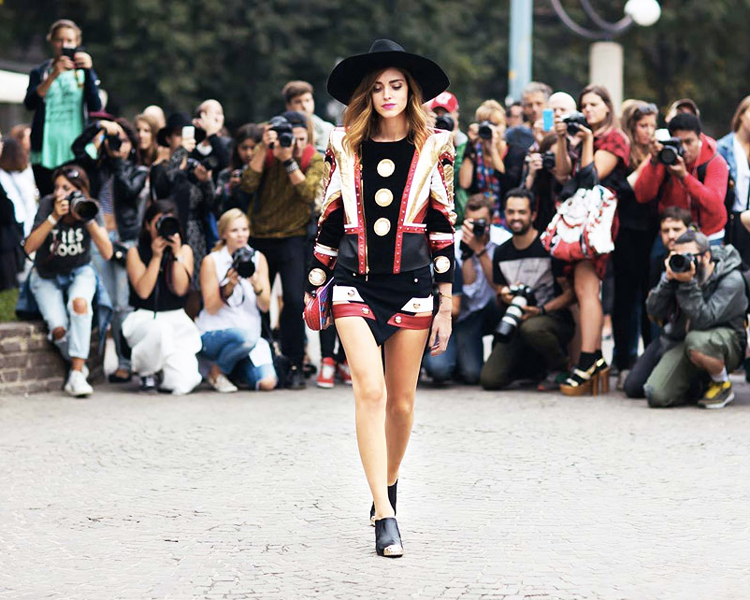

At the beginning of the 2000s, fashion lovers opened their blogs to share their ideas and comment on the latest trends. Shortly after, bloggers learned to monetize their contents and fashion blogs evolved from personal diaries into marketing tools.
Social media platforms such as Instagram, Twitter, Facebook , and Youtube spread. They enabled bloggers to reach a greater audience and have an even closer relationship with their existing readership. Many bloggers decided to close their websites to focus on producing content for socials, particularly for Instagram.
Nowadays, influencers have become prominent members of the fashion world. They collaborate with brand names which are increasingly keen to invest their money in social media advertising rather than in the magazine's one.
Chiara Ferragni posing for the photographers. Photo Credits: Style Shouts
But how do advertisers deicide where to put their money?
The marketing and data analytics platform Launchmetrics - trusted by many worldwide-famous brands such as Adidas, Fendi and Louis Vuitton - developed an algorithm able to cross-compare the performance of the “voices” that act in the fields of Fashion, Luxury and Cosmetics.
The MIV (Media Impact Value) algorithm:
“measures the impact of relevant media placements on all channels (online, social, prit) in order to derive a quantitative number for performance outcomes. The algorithm has been finely tuned to to specificities of the Fashion, Luxury and Cosmetics (FLC) industries, relying on historical data to create a more accurate way of measurement. It also takes into account both media and content quality to provide a higher value for content posted by more influential Voices or content that includes powerful images or videos. “
The algorithm calculate the impact of five main “voices”:
According to the company “the voice-centric" approach places an emphasis on the voices speaking in order to cross-compare performance.” The selection of voices reflects the real investments and organizational decisions that surround marketing and communications strategies, and allows brands to craft the perfect “voice mix” across various channels, media types and regions.
Using this method of evaluation, Launchmetrics conducted an analysis of the voices dominating the top 4 International Fashion Weeks of the Spring/Summer 2019 Season: Milano, Paris, London and New York.
The study shows that the battle between traditional media and influencers is quite evident.
Traditional media produced the highest number of mentions (52.4%).
However, it was the influencers who managed to garner the most MIV. Opinion leaders gained 49% of the total MIV, meanwhile traditional media’s share of value represents 32%.
Looking at the Voice analysis of the four fashion weeks, we can see that Paris and London continue seeing effective results from more traditional formats like the media.
New York and Milan however, obtaine higher MIV from digital. Milan, in particular, seems to be the leading market in Europe for influencers